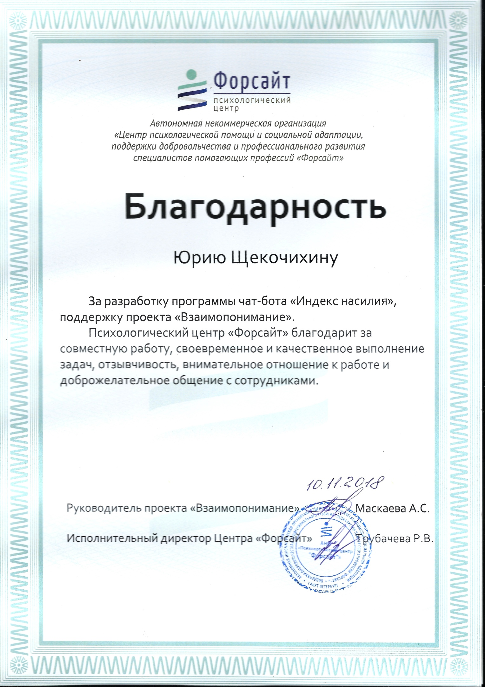

Iurii Shchekochikhin: Java/TypeScript developer
Contacts:
- linkedin: https://www.linkedin.com/in/ishch/
- Tel: +420 777609119
- Mailto: amagex@gmail.com
- telegram: @amagex
- skype: amagex
Professional Summary:
Skills:
TypeScript (vscode extensions), Java SE, Eclipse RCP (3.x), Spring CoreWork Experience
Sr Software Engineer at Broadcom Inc. (Feb 2019 – Present)
Location: Prague, The Capital, Czech Republic
{:.p-experience}
Projects:
- Rexx Language Support
- Debug adapter for InterTest server (COBOL in CICS and BATCH).
Technology stack and tools:
- TypeScript
- Java
- VScode
- Theia
- Eclipse RCP
- git
- mainframe
Java Developer at NOVARDIS Consulting (Jul 2018 – Jan 2019. 7 mos)
LocationSaint Petersburg, Russian Federation
{:.p-experience} Hybris customization for huge international e-commerce web shop. Create customization promotions management system.
Technology stack and tools:
- Hybris Commerce 6.7
- Spring
- MySQL
- Solr
- git
Java Developer at Comtek (Feb 2014 – Jun 2018. 4 yrs 5 mos)
Location: Saint Petersburg, Russian Federation
{:.p-experience} My work experiences in Comtek(Freescale) started with support job on CodeWarrior for MCU project. CodeWarrior for MSU is Eclipse Juno base IDE. C/C++ support is implemented by custom build of CDT. To track issues we used ClearQuest. Source code was store in AccuRev scm. I mostly did bug fixes. On this project I managed to improve build system by replace some of manual actions with ant build script.
{:.p-experience} Next project in Comtek(NXP) was S32 Design Studio family products. It’s four products: S32DS ARM, S32DS E200, S32DS Vision and DS3.0. New project was started from scratch with new infrastructure: Jira, Jenkins, git. I developed build system based on maven and tycho. Jenkins was used as CI server but any user at any time was able to build any version of any product having only maven and git installed on her PC. I adapted license system from CodeWarrior, switched it to new backend (jni bind) and redesigned it to meet new requirements. I participated to domain model design and backend implementation of New Project Wizard. Also I improved New Project Wizard performance by 2-10 times depends on cases. I developed Import/Export subsystem for IAR Workbench’s ProjectInfo.xml format. This subsystem includes model matching and heuristics to minimize possible errors on import and export operations. Also I participiated to Launch Configuration creation unification.
Technology stack and tools:
- Eclipse RCP
- OSGi
- SWT
- maven/tycho
- git
Java Developer at Gridnine Systems (Aug 2012 – Dec 2012. 5 mos)
Location: Moscow, Russian Federation
{:.p-experience}
In Gridnine Systems I was java developer on pososhok -
flight tickets shop website. There I integrated FlyDubai airlines booking system to website. I switched frontend web-server from apache httpd to nginx. Traffic report generator was rewritten on python by me.
Also I supported postgresql database replication and monitored linux servers performance.
Technology stack and tools:
- Java SE
- Postgresql
- SVN
Java Developer at Aleatis (Dec 2012 – Feb 2014. 1 yr 3 mos)
Location: Moscow, Russian Federation
{:.p-experience} In Aleatis (Dell) I ported VM drive resize system from C# to Java.
Technology stack and tools:
- Java SE
- Hibernate
- Spring
- git
Researcher at ISP RAS (Dec 2008 – Nov 2012. 4 yrs)
Location: Moscow, Russian Federation
{:.p-experience} In ISPRAS I was developing and support requirements management system: Requality. I developed prove of concept prototype of system based on Eclipse RCP. I managed to use embedded web-browser from SWT to be requirements text renderer with ability to mark text segments and link them to requirement database.
Technology stack and tools:
- Java SE
- Eclipse RCP
- SVN
Education
Moscow State University of Instrument Engineering and Computer Sciences (MGUPI) (2003-2008)
Specialist degree in computer science.
Hobbies and Interests
I build quadcopters in my free time.
Others

- Participate to RFE/LE hackathon